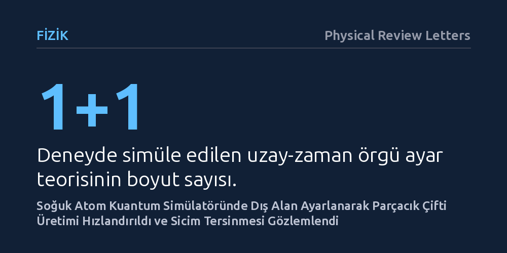

FIZIK · Physical Review Letters · 2026-10-08
Araştırmacılar, laboratuvarda gözlemlenmesi son derece zor olan Schwinger parçacık üretimini ve sahte vakum bozunmasını soğuk atomlu bir kuantum simülatöründe inceledi. Dış arka plan alanını ayarlayarak çift üretimini hızlandıran ekip, enerji spektrumunda sicim tersinmesine işaret eden karakteristik uyarılma tepeleri saptadı.
Devasa parçacık hızlandırıcılarda bile ulaşılamayan aşırı güçlü elektrik alanlarındaki temel parçacık dinamikleri, artık masaüstü soğuk atom deneyleriyle kontrollü şekilde modellenebiliyor.

Kuantum elektrodinamiği kuramına göre evrendeki hiçbir boşluk aslında tam anlamıyla boş değildir. Kuantum dalgalanmaları nedeniyle boşlukta sürekli olarak sanal parçacık ve antiparçacık çiftleri belirip anında birbirini yok eder. Eğer bu boşluğa akıl almaz derecede güçlü bir elektrik alanı uygulanırsa, bu sanal çiftler birbirlerinden koparak gerçek ve gözlemlenebilir parçacıklara dönüşebilir. Fizikte "Schwinger etkisi" olarak adlandırılan bu olgu, aslında kararsız bir taban durumu olan sahte vakumun kuantum tünellemesiyle gerçek vakuma doğru bozunması sürecidir.
Ancak bu parçacık üretimini doğrudan laboratuvarda gözlemlemek olağanüstü zordur. Parçacıkların kendiliğinden oluşabilmesi için gereken elektrik alanı şiddeti, günümüzün en gelişmiş hızlandırıcı ve lazer teknolojilerinin dahi çok ötesindedir. Ayrıca tünellemenin gerçekleşmesi için parçacıkların aşması gereken kuantum bariyeri çok geniş olduğundan, parçacık üretim hızı deneysel olarak tespit edilemeyecek kadar düşük kalmaktadır. Fizikçiler uzun süredir bu erişilmez süreci doğrudan evrende aramak yerine laboratuvarda kontrol edilebilen yapay kuantum sistemlerinde taklit etmenin yollarını araştırmaktadır.
Araştırmacılar bu engeli aşmak için devasa parçacık çarpıştırıcıları inşa etmek yerine, lazer ışınlarının kesişmesiyle oluşturulan optik bir örgü içine hapsedilmiş aşırı soğuk atomları kullandı. Bu düzenek, yüksek enerji fiziği kurallarını masaüstünde test etmeye olanak tanıyan bir kuantum simülatörüdür. Deneyde, bir uzay ve bir zaman boyutundan oluşan 1+1 boyutlu bir örgü ayar teorisi modeli soğuk atomların kuantum durumlarına uyarlandı.
Ekip, sistemi termal dengeden tamamen uzaklaştıran özel bir deneysel protokolle çalıştırdı. Simülatörde atomların maruz kaldığı dış arka plan alanı dışarıdan hassas bir şekilde ayarlanabilir hale getirildi. Böylece araştırmacılar, kuantum tünelleme hızını ve parçacık çifti üretim olasılığını doğrudan değiştirebilecekleri kontrollü bir deneysel zemin elde etti.
Dış arka plan alanının hassas kontrolü sayesinde araştırmacılar, parçacık üretim hızının belirgin şekilde arttığı elverişli bir çalışma aralığına ulaşmayı başardı. Sonsuz kütleli vakum durumundan başlayan sistemde, alanın etkisiyle parçacık ve antiparçacık çiftlerinin hızlı ve net bir şekilde ortaya çıktığı gözlemlendi. Bu sayede sahte vakum bozunmasının dinamikleri yüksek hassasiyetle izlendi.
Çalışmanın bir diğer aşamasında fermiyon kütlesinin sıfıra yaklaştığı sınır koşulu incelendi. Sistemin zaman içindeki kuantum evrimi ölçüldüğünde, enerji spektrumunda belirgin uyarılma tepeleri keşfedildi. Bu tepelerin, kuramsal Schwinger modelinde öngörülen kütleli bozonik modlara karşılık geldiği ve parçacıklar arasındaki elektrik bağının periyodik olarak yön değiştirmesi anlamına gelen "sicim tersinmesi" mekanizmasıyla doğrudan uyumlu olduğu tespit edildi.
Elde edilen bulgular, aşırı yüksek enerjili evren koşullarını ve karmaşık ayar teorilerini incelemek için soğuk atom simülatörlerinin son derece güçlü bir araç olduğunu kanıtlıyor. Doğrudan gözlemlenmesi neredeyse imkânsız olan sahte vakum bozunması ve dengeden uzak kuantum dinamikleri, artık kontrol edilebilir parametrelerle laboratuvar masasında adım adım takip edilebiliyor.
Bu tür deneyler, erken evrenin enflasyon döneminde vakum durumlarının nasıl değiştiğinden nötron yıldızlarının etrafındaki aşırı güçlü alanlara kadar birçok kozmolojik ve temel fizik sorusunun masaüstünde simüle edilebileceği yeni bir araştırma döneminin kapısını aralıyor.